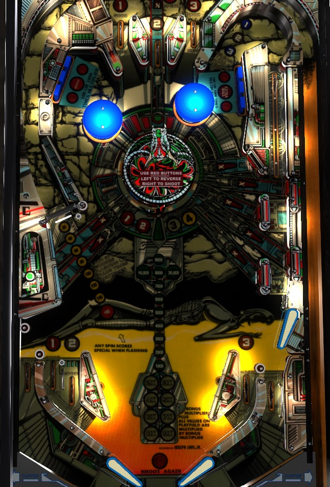

Not to be confused with Viper Night Drivin' (Sega, DMD, 1998).
Early in a game, shoot for flashing red arrows to earn bonus multipliers; one arrow will be lit at a time moving around the playfield, or enter the center turret structure (from the top) to lit all red arrows. Bonus multipliers affect both the end of ball bonus and the playfield scoring. Standup targets positioned on the center turret advance bonus. When the multiplier is high, the safest way to big points is by shooting the left spinner.
The center turret always tries to be positioned so that the entrance hole is at the top. Usually, any of the 3 top lanes will drop the ball into the turret. When the ball is in the turret, the turret will constantly rotate clockwise. Holding down the red button on the left side of the cabinet will cause the turret to rotate anticlockwise. Pressing the red button on the right side of the cabinet fires the ball out of the turret.
In normal play, one of the game's standup targets will be flashing at any given time. Unlit targets score 100 points. Flashing targets score 1,000 points, advance the game's multiplier, and cause that target to be solidly lit. Solidly lit targets score 1,000 points. When the ball is in the turret, and for a few seconds after the ball is launched from the turret, all standup targets will flash, meaning you can advance the multiplier from any of them (unless you have already advanced the multiplier from that target), The game multiplier carries over from ball to ball and applies to all playfield scoring, not just the end of ball bonus. There are 8 standup targets: five on the right side of the game, two on the left, and one directly above the #2 top lane. Collecting all of the multipliers to max it out at 9x lights the standup target above the #2 top lane for a Special.
There are 4 standup targets on the turret itself, coloured red, blue, white, and yellow. Hit a target to light the corresponding 1-2-3-4 insert in the playfield and score 100 points. Hitting a lit target scores 1,000 points and a bonus advance. Once 1-2-3-4 are lit, they stay lit for the rest of the game.
The lock lane is in the far upper right of the playfield. Locking a ball scores 7,000 points. If 3 balls are in the lock, the game will kick one ball out to resume single ball play if the 1-2-3 lanes have not been completed; if 1-2-3 is complete, all 3 balls will be kicked out for 3-ball multiball. Roll through an unlit lane to light it; 1-2-3 can be collected from the top lanes or the game's three in lanes. All 1-2-3 lanes score 1,000 points or 3,000 when lit. There are no multiball-specific scoring features. Starting multiball resets the 1-2-3 lane lights. Lock stealing is always available; balls are held in the lock from ball to ball, player to player, and game to game.
There are two 3-banks of drop targets in the upper left and upper right of the playfield. A flashing light moves between the left and right targets of each bank automatically over time. Hit a target with a flashing light in front of it to light it solidly. Lighting all 4 of the drop targets that are part of the rotating sequence will in turn light the center target of the upper right bank for an extra ball. The center target of the upper left bank is lit for a Special if and only if the base bonus count is an even number of thousands of points that is at least 20,000.
The left spinner starts at a value of 20 points per spin (times multiplier). The spinner value is held constant until the spinner stops; each spin of the spinner rotates whether the value of the next shot to the spinner is worth 20, 40, 80, 100, 120, 140, or 160 points per spin. If the spinner is worth 160 points per spin, any activation of the spinner switch will also award an instant Special. After collecting a couple multipliers, the spinner is very frequently worth at least 500 points per spin; shooting it gives solid, safe points and throws the ball up to the top lanes, where it will very likely fall into the turret for a chance at yet another multiplier.
Viper has a conventional table bottom, but with two in lanes on the left instead of one. The left out lanes always scores 5,000 points. The two left in lanes award the 1 and 2 in the 1-2-3 lock sequence and score 1,000 points or 3,000 when lit. The right in lane awards the number 3 and scores 1,000 points or 3,000 when lit. The right out lane does not award any numbers, but it scores 3,000 or 1,000 points depending on whether or not the number 3 is lit.
Bonus is advanced each time one of the standup targets on the center target structure is hit after being lit. Once these targets are lit by hitting them once, they stay lit for the rest of the game. The first bonus advance is not given for free; it is possible to drain with no bonus. Max base bonus is 39,000 points. Base bonus is never carried over from ball to ball. Bonus multiplier is advanced by shooting flashing standup targets from the flippers or the turret launcher. Bonus multiplier maxes out at 9x, affects all playfield scoring rather than just the end of ball bonus, and is always carried forward from ball to ball.
Specials score nothing, 100,000 points, an extra ball, or a free game. There is a limit of either 1 special per ball or 1 special per game. Extra ball cannot be set to points; it is either on or off. Either 3 or 5 extra balls can be stored in memory at once.